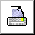

| Help Quality Control Extranet |
||
|

This help page is a brief introduction to the use of the Quality Control Extranet. You can print it by pushing on the appropriate button up-above. To close this window, click on the button symbolizing a "house". Introduction
Filling reports in Delivery receipts |